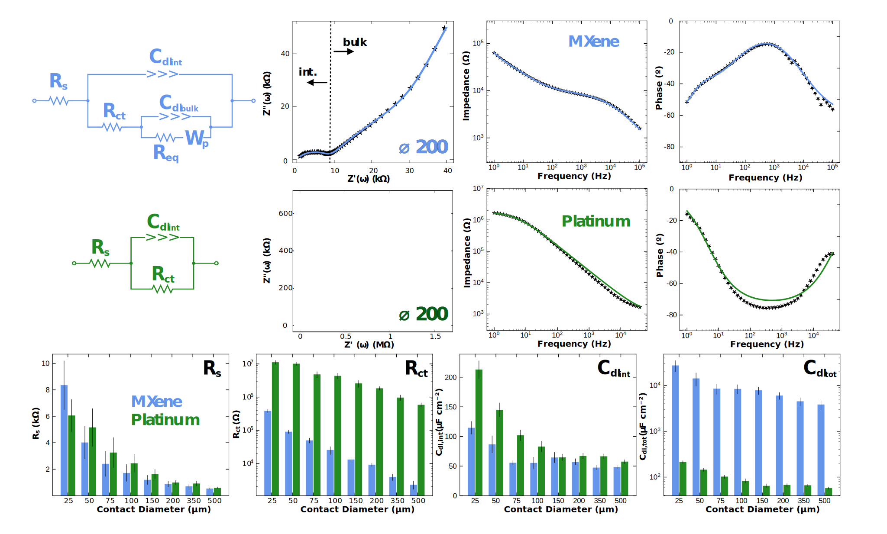
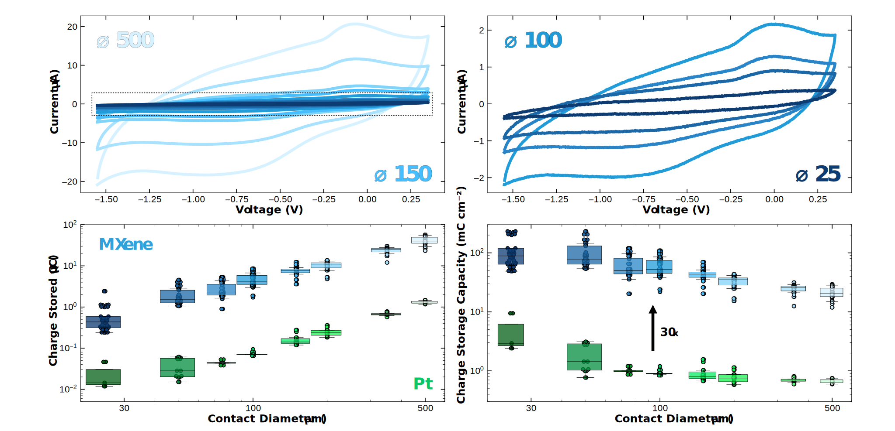
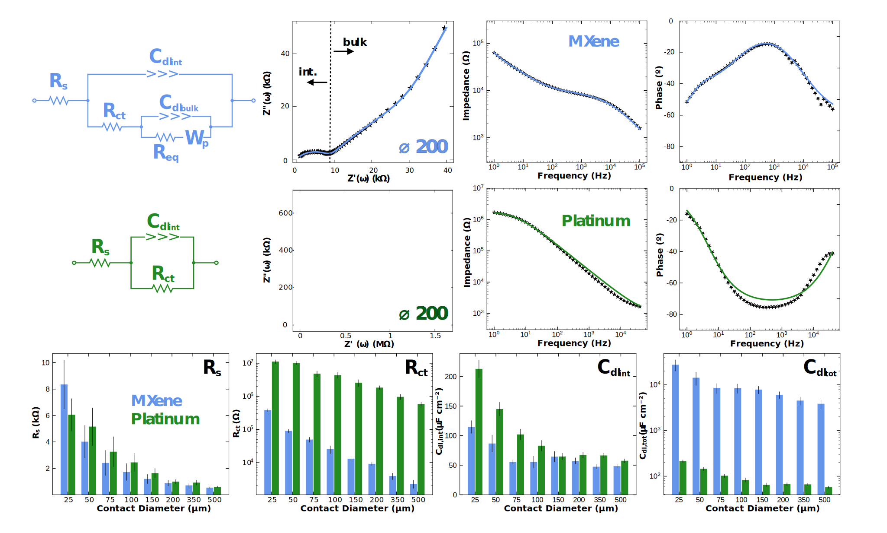
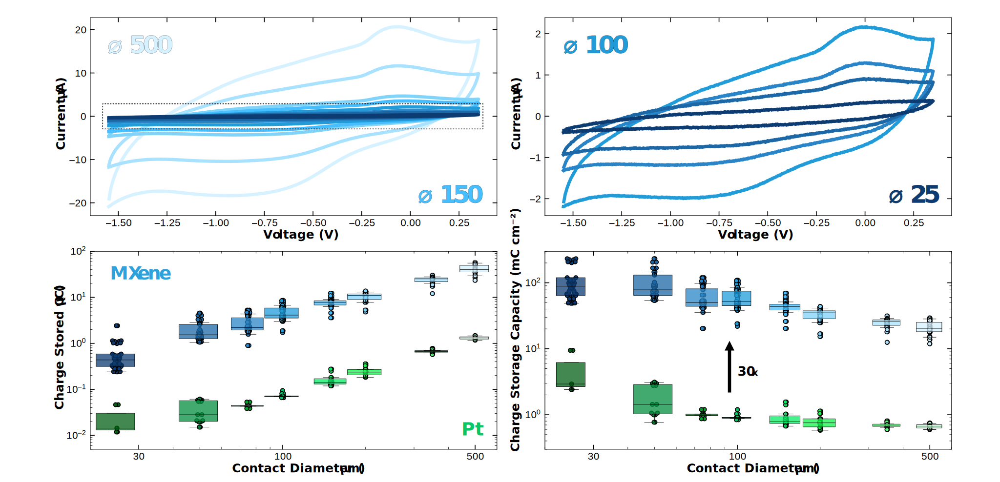

Size Scaling of the Electrochemical Performance of Ti3C2Tx MXene Microelectrode Arrays for Electrophysiological Recording and Stimulation
This study establishes Ti₃C₂Tₓ MXene microelectrodes as a high-performance platform for bioelectronic interfaces capable of both neural recording and electrical stimulation across a broad range of electrode sizes (25–500 µm). Through comprehensive electrochemical characterization—including impedance spectroscopy (EIS), cyclic voltammetry (CV), and voltage transient (VT) analysis—MXene electrodes consistently outperformed platinum, the clinical gold standard. In particular, MXene electrodes demonstrated nearly 20× lower impedance at 10 Hz, ~100× greater charge storage capacity (CSC), and over 6× higher charge injection capacity (CIC), enabling safe and effective stimulation. These results highlight MXene’s highly capacitive behavior and suitability for broadband electrophysiology, including applications requiring ultra-low impedance and high-resolution signal fidelity.
To further probe the mechanisms underlying this performance, an electrochemically grounded equivalent circuit model was introduced, capturing solution resistance, surface interactions, and diffusion-driven bulk dynamics. Fitting experimental impedance spectra to this model revealed exceptionally low charge transfer resistance and high double-layer capacitance across all MXene microelectrode sizes.
In parallel, a systematic investigation of processing parameters revealed how spray-cast concentration and volume of the MXene ink affect electrode morphology and performance. While overall electrochemical functionality remained consistent across tested ranges, surface roughness and film thickness were found to tune the underlying charge storage and transfer mechanisms. Higher concentrations increased surface roughness and reduced charge transfer resistance, while larger spray volumes increased film thickness and boosted double-layer capacitance.
Together, these findings validate MXene as a scalable, tunable, and electrochemically robust electrode material for high-performance bioelectronic interfaces. Beyond proving functional superiority to platinum, this work provides mechanistic insights and processing guidelines critical to optimizing next-generation neural interfaces. The demonstrated performance down to 25 µm contact sizes underscores the promise of MXene for high-density, small-scale applications in both neural recording and stimulation, and sets the foundation for its deployment in future clinical and experimental bioelectronic systems.

 


